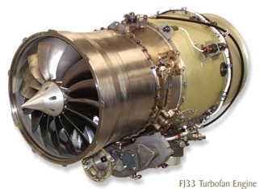

|
Arif Özver Ergin
B.Sc. Makine Müh.
M.Sc. Endüstriyel Tasarým
Aralýk 2007, Güzelyalý / Ýstanbul
Ýnovasyon Türkiye'de uzunca bir süredir 6 Sigma, Yalýn Üretim, Kaizen gibi önemli bir gündem maddesi oldu. Üniversiteler, þirketler, sivil toplum örgütleri inovasyon konusunda önemli çalýþmalar yapýyorlar. Elbette ayný konular geliþmiþ ülkelerde Türkiye'den yýllar önce tartýþýlmaya baþlanmýþtý bile. Ýnovasyonun farklý boyutlarý ise Türkiye'de yeni yeni ortaya çýkmaya baþladý. Açýk Ýnovasyon bunlardan en güncel ve ilgi çekici olanlardan birisi.
Açýk Ýnovasyon, Berkeley Profesörlerinden Henry Chesbrough tarafýndan ortaya atýlan bir kavram. Açýk inovasyonun altýnda yatan temel düþünce, tamamen bilgi ile kuþatýlmýþ bir dünyada firmalarýn sadece kendi araþtýrma faaliyetlerine baðlý kalamamalarý ve bunun yerine dýþ kaynaklara örneðin lisans anlaþmalarý ya da patent satýn almalarý gibi firma dýþý kaynaklara yönlenmek zorunda olmalarýdýr. Açýk Ýnovasyonun aksine, Kapalý Ýnovasyon bilginin büyük çoðunluðunun ya da tamamýnýn çok sýnýrlý dýþ kaynak kullanýmý ile tamamen iç kaynaklar ile elde edilmesidir.
Açýk Ýnovasyon Modeli (7)
2. Dünya Savaþý sonrasý dönemde kapalý inovasyon bir çok firmanýn kullandýðý bir paradigmaydý. Ýnovasyon yapan birçok firma icatlarýný çok gizli tutuyordu ve dýþ kaynaklý bilgileri ele geçirip özümsemeye çalýþmýyordu. Oysa bugün dünya bilginin daha hýzlý yayýlmasýna ve kullanýlmasýna olanak saðlayan büyük teknolojik ve toplumsal ilerlemelere sahne oldu. Örneðin elektronik haberleþme sistemleri, internet, cep telefonlarý. Bugün bilgi (enformasyon) o kadar kolay ve hýzlý yer deðiþtirebiliyor ki, bu sürece karþý koymak neredeyse imkansýz. Özetle, Açýk Ýnovasyon, firmalarýn bu süreci durdurmaya çalýþmak yerine, bu durumdan faydalanmayý öðrenmelerini söylüyor (1)
Kapalý Ýnovasyon |
Açýk Ýnovasyon |
| Sektörümüzdeki en akýllý insanlar bizim için çalýþýr. |
Bütün akýllý insanlarýn bizim için çalýþmalarýna gerek yok. Ýhtiyacýmýz olan þey içerde ya da dýþarýdaki akýllý insanlarla çalýþabilmek. |
| Ar-Ge'den faydalanmak için, icat etmeli, geliþtirmeli ve bundan faydalanmalýyýz. |
Harici Ar-Ge de ciddi deðerler yaratabilir, dahili Ar-Ge ortaya çýkan deðerin tamamlayýcýsý olmalýdýr. |
| Eðer biz icat ettiysek, ilk olarak biz piyasaya sürmeliyiz. |
Kâr etmek için araþtýrmaya ilk olarak bizim baþlamamýza gerek yok. |
| Piyasaya inovasyonu ilk çýkartan, pazarda ilk kazanandýr |
Ýyi bir iþ modeli inþa etmek, pazara ilk olarak çýkmaktan daha iyi olabilir. |
| Sektördeki en iyi fikirlerin bir çoðunu ortaya koyabilirsek, kazanan biz oluruz. |
Eðer iç ve dýþ kaynaklý fikirleri en iyi kullanan biz olursak, kazanan da biz oluruz. |
| Kendi inovasyonlarýmýzý olabildiðince saklý tutmalýyýz ki rakiplerimiz bizim fikirlerimizden faydalanamasýn. |
Baþkalarýnýn bizim inovasyonlarýmýzý kullanmalarýndan fayda saðlayabilmeliyiz ve baþkalarýnýn Fikri Haklarýný kendi iþ modelimiz için yararlý olduðu zaman satýn alabilmeliyiz. |
Chesbrough'un "Açýk Ýnovasyon" adlý kitabý parlak fikirlerin firma dýþýnda aramasý yaklaþýmý ile popüler oldu. Açýk Ýnovasyon kavramý yaygýnlaþtýkça, firma içi Ar-Ge'nin inovasyona olan katkýsýnýn azlýðý anlaþýlmaya baþladý. Henry Chesbrough'nin Açýk Ýnovasyon konusundaki en büyük dayanaðý, inovasyon konusunda dünya liderlerinden birsi olan IBM'in yaptýðý araþtýrmalar. IBM'in ulaþtýðý en önemli sonuç, inovasyonlarýnýn ortaya çýkmasýnda firma içi Ar-Ge'nin payýnýn oldukça düþük olmasý:
IBM Firmasýnda Ýnovasyon Kaynaklarý
Kaynak: IBM "The Global CEO Study 2006"
Yýllar boyunca Ivory Soap, Crest diþ macunu, Ariel gibi çok baþarýlý inovasyona imza atmýþ olan P&G, göz bebeði gibi koruduðu dahili Ar-Ge merkezinin bir çok fonksiyonunu kaldýrdý ve çok geçmeden yeni fikir ve ürünlere konusunda çok çarpýcý sonuçlara ulaþtý. Firma bugün, üniversitelerden, yan sanayilerinden, firma dýþý mucitlerden fikirler topluyor ve karþýlýðýnda bazen ödül bazen de belirli oranda pay veriyor. On yýldan az bir süre içinde, P&G dýþ kaynaklý yeni ürün fikirlerinin oranýný %5'lerden, %50'ye kadar arttýrdý. Bu deðiþim, þirketin 2001-2006 yýllarý arasýndaki %6'lýk büyümesinin ve yýllýk kârýný 3 kat arttýrarak 8.6 milyar dolara ulaþmasýnýn arkasýndaki sebebi olarak görülüyor (2)
IBM de açýk inovasyonun avantajlarýndan yararlanan baþka bir firma. Bu ketum firma bazý alýþkanlýklarýndan kesin bir dönüþ yaparak LINUX kullanmaya baþladý.
Bilindiði gibi Linux, Linus Torvalds adýnda Finlandiyalý bir bilgisayar mühendisinin 1991 yýlýnda Helsinki Üniversitesi'nde geliþtirdiði bir iþletim sistemidir. Yaptýðý duyuru sonucunda tüm dünyadan birçok programcýnýn da desteði ile hýzla geliþmiþ olan açýk kaynak kodlu, kullanýcýsýna çalýþtýrma, kopyalama, daðýtma, inceleme, deðiþtirme ve geliþtirme özgürlükleri tanýyan açýk yazýlým türüdür. Linux hem güvenli olmasý hem de ekonomik olmasýndan ötürü ilerleyen yýllarda popüler hale gelmiþtir (3)
Bunun yanýnda Açýk Ýnovasyonlarý eleþtirenlerde mevcut. MIT, Giriþimcilik Merkezi'nden Kenneth Morse IBM'in yazýlým konusunda açýk olmakla birlikte donaným konusunda tamamen kapalý olduðunu ileri sürüyor.
Londra Imperyal College'den David Gann ve Linus Dahlander de açýk inovasyona kuþku ile bakan araþtýrmacýlar arasýnda. Açýk inovasyonun sektör ve firma ölçeðine göre deðiþeceðini ifade ediyorlar. Örneðin geleneksel sektörlerin açýk inovasyondan yararlanmalarý çok zor. Ayný zamanda açýk inovasyonla ortaya çýkan yönetim belirsizliði ve kaybolan fikri mülkiyet haklarýnýn maliyetleri ölçülebilmiþ deðil.
Baþka bir eleþtiri de, öz sermaye yoðunluðu yüksek endüstrilerden geliyor. Örneðin ürün geliþtirme sürecinin 5 yýla yakýn sürdüðü ve Ar-Ge için milyonlarca dolarýn harcandýðý otomotiv sektöründe, ortaya çýkan bilgilerin rakiplere açýlmasý çok gerçekçi deðil.
GE'den Immel de jet motoru ve lokomotif motoru gibi, kendilerinden baþka kimsenin kolaylýkla yapamayacaðý yüksek teknoloji gerektiren alanlarda, fikri mülkiyet haklarýnýn ve gizliliðin vazgeçilemez olduðunu ifade ediyor. Ayný þirketten Mark Little da dýþ kaynaklý fikirlerin her zaman uygun olmayacaðýný ifade ediyor.
Bununla birlikte beyaz eþya, tüketici elektroniði, gýda, kozmetik, temizlik sektöründe faaliyet gösteren firmalar kendilerinin dýþýnda yer alan insanlardan, organizasyonlardan ve geliþmelerden çok þeyler öðrenip faydalý sonuçlar elde edebiliyorlar.
Bazen patentler markalardan ve ürünün rafa çýkýþ hýzýndan daha önemsiz olabiliyor. Geliþen ekonomilerin bazý baþarýlý þirketler patentlerden uzaklaþsalar bile, birçok inovasyonlarýný ticari sýr olarak gizli tutuyorlar. Marketlerindeki akýþkanlýktan ve tarihsel olarak patent korumasýnýn yetersiz oluþunu tecrübe etmelerinden dolayý, önemli fikirleri karanlýkta býrakýyorlar ve bir sonraki inovasyonu sadece rekabete önde kalabilmek için çýkartmýyorlar. Geliþmiþ ülkelerde bile, inovasyonun hýzla geliþmesi doðrudan patent alýmlarýna yansýmýyor. (2)
P&G'nin en büyük rakiplerinden birisi olan Unilever yetkilisi David Duncan'a göre, firma müþterilerine eskiden olduðundan daha yakýn ve dýþ kaynaklý fikirleri &inovasyonlarý oldukça faydalý bir þekilde kullandýðýný ifade ediyor.
Peki, açýk inovasyonun her hangi bir firmada ne iþe yarayacaðýný nasýl bilebiliriz? Bu, firma ile ilgili olduðu kadar firmanýn piyasada nasýl algýlandýðý ile de ilgili bir konu. Boston Danýþmanlýk'tan Hal Sirkin'e göre P&G ve IBM gibi açýk inovasyonlarý örnek almak yerine onlarý birer fener olarak deðerlendirmek daha doðru. Bu þirketlerde çalýþan yeteri sayýda dýþarýda parlak fikirleri çekmeye çalýþan dünya çapýnda uzmanlar mevcut. Bu þirketler dýþ kaynaklý fikirleri bulmak konusunda açýk ve iyi bir fikir bulduklarý anda bu fikri pazara ulaþtýrýncaya kadar iþin peþini býrakmýyorlar.
Açýk inovasyon konusundaki farklý örneklerden bir tanesi de, inovasyon süreçlerine doðrudan müþterilerini de dahil eden Nokia. Bugün bir oyuncaðýn nasýl yapýldýðý, eksiklerinin ne olduðu, daha nelerin eklenmesi gerektiði konusunda, sadece çocuklarýn deðil büyüklerin bile oluþturduðu bir çok internet sitesi mevcut.
Açýk inovasyonun baþka bir boyutu da kullanýcý kaynaklý inovasyon. Bu konuda önemli çalýþmalar yapan MIT'den Eric Von Hippel'e göre kullanýcýlar artýk kullandýklarý ürünlerin özelliklerinin belirlenmesinde söz sahibi olmak istiyorlar çünkü çoðu zaman bir üründen gerçekten istedikleri þeyleri alamýyorlar. Hippele göre Açýk Ýnovasyon'da müþterin gerçek ihtiyaçlarýnýn ve beklentilerinin eksiksiz olarak karþýlanmasýnda Kapalý Ýnovasyon kadar yetersiz. Çünkü þirketler Açýk Ýnovasyon bile söz konusu olsa, hâlâ piyasadan, fikri mülkiyet haklarýndan bahsediyorlar. Hippel'e göre firmalar kendilerini çok daha iyi tasarýmlara götürebilecek olan kullanýcýlara ulaþmaktan hâlâ uzaklar.
Sonuç Yerine:
Ýnovasyonun ülkelerinin kalkýnmasýnda ve firmalarýn baþarýlý olmasýnda oynadýðý rol artýk hemen herkesin uzlaþtýðý bir konu. Ülkeler ve þirketler, Küçük-Büyük Ýnovasyonlar, Süreç -Ürün Ýnovasyonlarý konusunda farklý uygulamalar geliþtiriyor.
Görünen o ki; Açýk ve Kapalý Ýnovasyon uygulamalarý da önümüzdeki günlerde farklý boyutlarý ile daha sýk telaffuz edilmeye ve tartýþýlmaya baþlanacak:
- Firmalar Açýk Ýnovasyondan nasýl yararlanabilir,
- Ürün kullanýcýlarý, baðýmsýz araþtýrmacýlar, bilim adamlarý ya da mucitler düþüncelerini onlarý kullanacak firmalara ya da organizasyonlara nasýl ulaþtýrabilirler?
- Türkiye'de inovasyon konusunda çok ciddi roller üstlenmiþ olan TÜBÝTAK, TTGV, TIDEB gibi organizasyonlar Açýk Ýnovasyon konusunu nasýl deðerlendirecek?
- Araþtýrmacýlar ve bilim adamlarý bu konuyu ne þekilde inceleyecekler ve Türkiye için ne tür dersler çýkartacaklar?
Kaynaklar:
(1) http://en.wikipedia.org/wiki/Open_innovation
(2) www.economist.com/specialreports/displaystory.cfm?story_id=9928227
(3) http://tr.wikipedia.org/wiki/Linux
(4) https://secure3.verticali.net/pg-connection-portal/ctx/noauth/SubmitInnovation.do
(5) www.oecd.org/dataoecd/31/17/38930776.pdf
(6) www.oecd.org/dataoecd/6/8/37915612.pdf
(7) Rebacca Ward, Jan 2007. What is Innovation and why should you do it, SQW
|